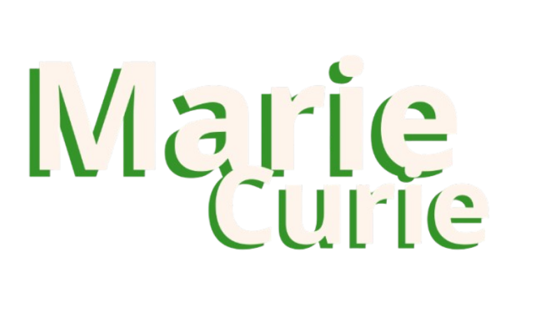

Boas-vindas a
 Quero conhecer!. Autor desconhecido, Domínio público")

Quem ela foi?
Marie Curie foi uma cientista polonesa naturalizada francesa, pioneira na pesquisa sobre radioatividade. Foi a primeira mulher a ganhar um Prêmio Nobel e a única a receber dois em áreas diferentes: Física (1903) e Química (1911). Junto com seu marido Pierre Curie, descobriu os elementos rádio e polônio. Suas pesquisas revolucionaram a ciência e abriram caminho para tratamentos médicos como a radioterapia. Marie Curie morreu em 1934 de anemia aplástica, causada pela exposição prolongada à radiação, numa época em que os efeitos nocivos da radioatividade ainda não eram conhecidos.
Galeria